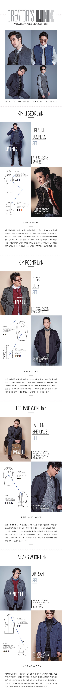

뇌블리 김지석?
야매셰프 김풍?
이과오빠 이장원?
엉뚱시인 하상욱?
자신의 뇌섹 스타일을 확인한 후, SNS에 # 해시태그와 함께 공유해 주세요.
공유해 주신 분들 중 추첨을 통해 당신의 뇌섹지수를 높이는 선물을 드립니다.
-
참여방법
- STEP 01
- 뇌섹 스타일 분석기에 자신의 이름 입력
- STEP 02
- 자신의 뇌섹 스타일 확인
- STEP 03
- SNS에 #해시태그와 함께 자신의 뇌섹 스타일 공유 - #빈폴링크 #모듈아우터
- 이벤트 기간 : 2015.10.16(금)~2015.11.06(금)
- 당첨자 발표 : 2015.11.13(금) SSF샵 공지
-
이벤트 경품
- 빈폴 링크 아우터(1세트)
- 5명
- 뇌가 맑아지는 에버랜드 주간권 (1인 2매)
- 20명
- 뇌세포 노화 예방에 좋은 두유 기프티콘
- 100명
-
이벤트 유의사항
- 1. 이벤트 안내와 다른 방법을 통한 이벤트 응모 시 당첨이 취소 될 수 있습니다.
- 2. 이벤트는 제한 없이 중복 응모 가능하나, 경품의 중복 당첨은 불가합니다.
- 3. 본 이벤트 내용 및 경품은 당사 사정에 의해 예고없이 변경될 수 있습니다.
- 4. 경품 제세공과금(22%)은 당첨자 본인 부담입니다.

KIM JI SEOK
과거 사람들의 평가와 시선만 생각하던 때가 있었다. 나를 잃을까 두려워져 마음을 고쳐먹었다.
해외로 여행도 다니고, 안정감을 주는 러닝을 뛰고, 또 온전한 나만의 시간을 갖기 위해 이사도 했다.
무엇보다 중요한 건 '내 자신을 잃지 않는 것' 그러자 기회가 오더라. 재치있는 나를 선보일 기회.
'배우'라는 타이틀에 묶여 보여지는 멋에만 신경 쓸 게 아닌, 내가 갖고 있는 진짜 '멋'을 펼치고 있다.
기대해도 좋다. 난 끊임없이 변화하면서도 '나'를 잃지 않는 사람이다.
KIM POONG
모든 것들이 새롭고 즐겁다. 재미있어 보이는 길을 앞에 두고 무작정 발을 떼지 않고 그 앞에서 고민 한다면, 그 고민은 후회와 미련으로 남기 마련이다.
나는 여전히 만화도 즐겁고, 요리도 즐겁다. 그리고 방송과 대중들의 관심 또한 즐겁다. 물론, 실패를 두려워 하지 않는 것은 아니다.
그저 내가 삶에 있어 높게 두는 가치는‘새로운 가능성’ 그리고 하지 못 해 남는 ‘미련’을 멀리하고자 하는 마음이다.